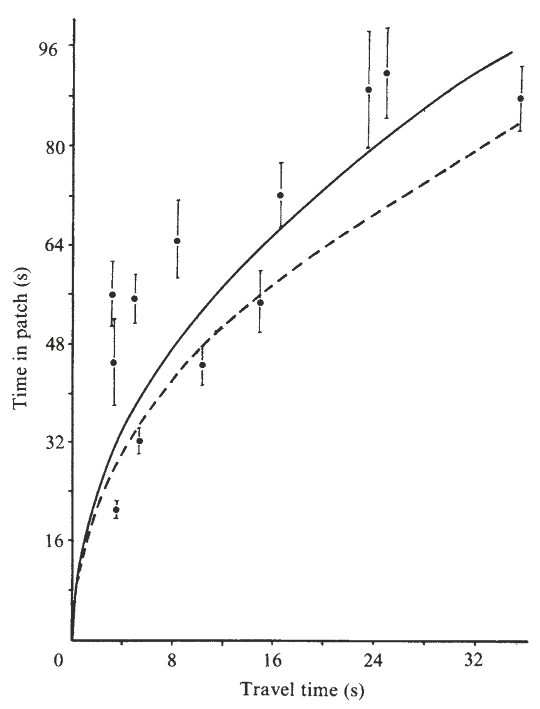
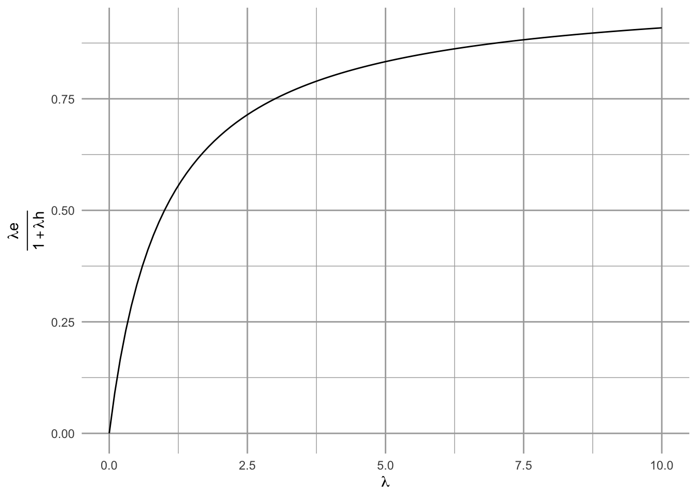
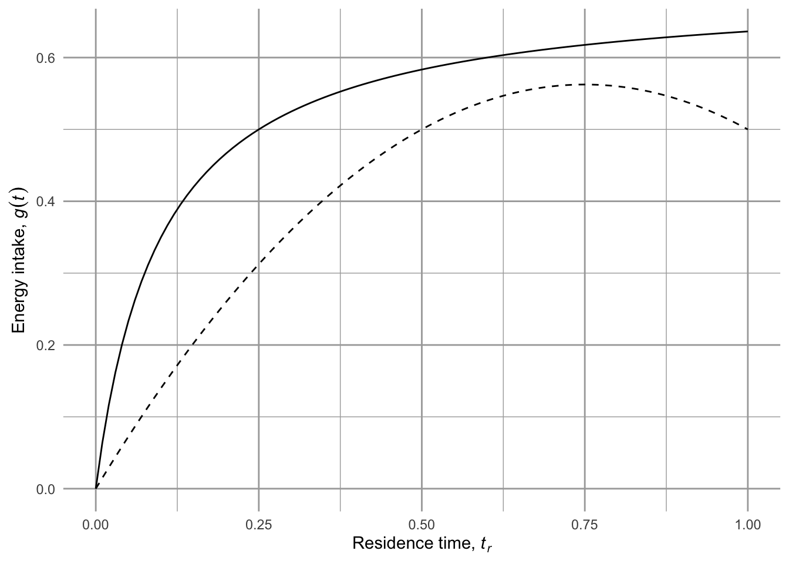
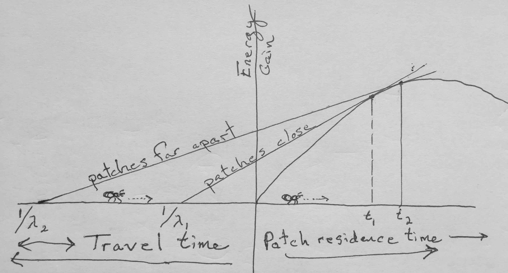
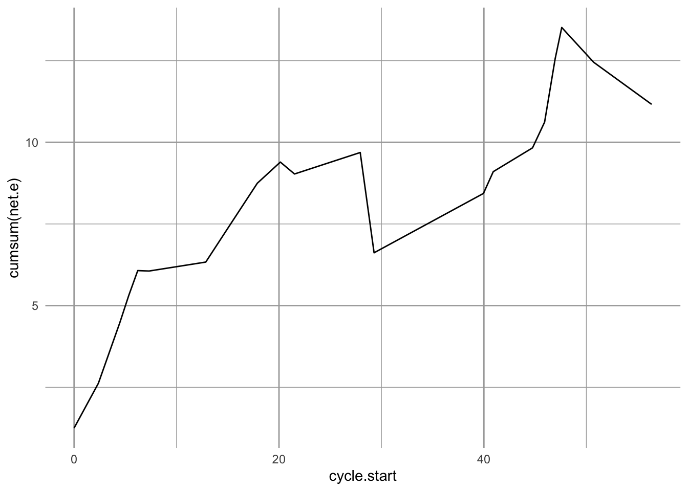
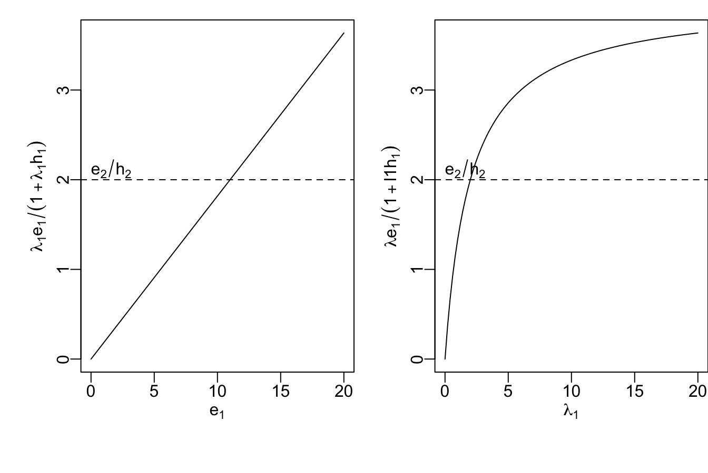

3 Optimal Foraging
It can be useful to think of natural selection as an optimizing process: phenotypes diversify, winners replicate and losers don’t, and the phenotypes of winners tend to get passed on to the replicants. Therefore, we often assume, as did Dr. Pangloss, that the species that exist now are the best of all possible species, that is, they are of optimal design. And like Dr. Pangloss, we would be woefully mistaken if we stopped there. Nonetheless, optimization, that is, the tendency toward an optimum, helps us generate testable hypotheses and we consider some of these below.
Optimal Foraging Theory (OFT) helps us consider what organisms would do if they foraged optimally. All organisms–plants, fungi, archaea, and even animals–forage, and they are all subject to natural selection. Therefore, their phenotypes work pretty well, but probably not optimally and definitely not optimally for all times and places. Nonetheless, OFT is an efficient theory about the behavior of an organism, in the absence of other complications. Therefore, it allows us to study the relative importance of those “other complications.”
Foraging is a key link between the individual, and communities and ecosystems (Beckerman et al. 2010). All organisms interact with their environment via consumption, and the choices they make influence population dynamics, species interactions, nutrient cycling, and even the physical structures of terrestrial and aquatic habitats. The text and logic of this chapter rely heavily on Stephens and Krebs (1986) and Ellner (2009).
In Scheiner and Willig’s edited volume on The Theory of Ecology, Andy Sih (Sih 2011) proposes that the following propositions form the basis of foraging theory:
- Foraging patterns maximize fitness or a correlate of fitness.
- Foraging patterns depend on the range of options available to the forager and on how each available option affects fitness or a correlate of fitness.
- Foraging behaviour balances conflicting demands–tradeoffs are important in shaping foraging behaviour.
These properties are the outcome of natural selection operating on foraging behavior. Our understanding of foraging itself considers these three features (Stephens and Krebs 1986):
- currency (what is being optimized),
- constraints (features of behaviour that limit optimality), and
- the resulting decision rules.
Currency is that quantity that is optimized by the forager. This currency is assumed to be a quantity that limits fitness, such as energy or a particular consumable resource. We measure it as a rate, for instance, as the energy gained per unit time (E/T) or the uptake of a critically limiting resource per unit time (R/T).
Constraints are limitations that we assume about organisms. These might include distances between resource patches, the time and costs associated with extracting a resource from a substrate or subduing prey. They also include constraints imposed by other species including competitors and predators. Constraints can get complicated quickly; however, simple quantitative theory makes predictions against which we can evaluate more complicated assumptions.
Decision rules are what we ascribed to a forager’s choices. A decision rule concerns the probability of attacking prey if encountered, or when to leave one resource patch in order to search for another.
An additional way to think about all this is where, when, and what. A great deal of effort has focused on understanding patch use: where foragers should explore for resources, and when they should give up and go in search of another patch (Charnov 1976). These are patch use models, and are based on economic models and the marginal value theorem.
Another avenue of inquiry concerns what animals should eat. For instance, should they go after big prey that may be hard to catch and difficult to subdue, or just snack on what is easy? These are prey models or diet models, and attempt to explain why organisms consume what they do.
A note on “prey”. All organisms forage for resources. Plants extend branches toward the light, and proliferate leaves and roots into resource rich patches, and rhizomes grow longer faster through resource-poor soils. Bumblebees search for and learn where to find nectar-rich flowers, and wolves hunt in packs to take down large ungulates. Some bacterivorous nanoflagellates intercept particles selectively depending on the perceived nutritional value of particles (Boenigk et al. 2002). So, depending on the forager, its “prey” may be \(\mathrm{NO}_{3}^-\) ions, nectar, moose, or bacteria. Therefore, we will refer to these resources variously as prey, prey items, resources, and resource items. Some of these ideas are best handled with patch-based models (Charnov 1976) where a “resource patch” is a more intuitive and useful unit.
A note on “handle”. All organisms pays costs to consume resources. In OFT, “handle” typically means expending energy and time to attack and subdue prey (predators), proliferate into resource rich areas (plants), exude extra cellular enzymes (fungi); ingest the item(s), and then resume searching.
3.1 A prey model
…in which a forager asks, “should I eat this?”1
1 whether “I” is a sugar maple tree or a human, most of us do not make this decision conciously…
Let’s start where this field started, with a prey-centered model (MacArthur and Pianka 1966; Emlen 1966).
- Currency - long-term energy gain per unit time, \(G/T\).
- Constraints
- forager can consume only what it encounters.
- forager uses time and energy searching for items and handling items.
- if the forager chooses to pursue an item, searching stops and handling starts.
- Decision rules - the probability that a forager pauses from searching to handle an item.
The goal is to optimize the currency.
3.1.1 Our intuition

It seems reasonable that if a forager encounters food, it should eat it. However, if handling it costs more than the forager gets back in energy, then it isn’t worth it. We might think of this as the ratio as profitability, \[\frac{e_i}{h_i}\] where \(e_i\) is the energy in an item of type \(i\), and \(h_i\) is the cost of handling said item. If \(e_i/h_i<1\), then it doesn’t make sense to select the item. Further, handling an item means that the forager is not looking for a better food item. This suggests that even if \(e_i/h_i>1\), a forager may not want to handle it if it is likely to soon encounter food items of higher energy content. On top of this, the act of searching may expose a forager to a risk of running into competing foragers, or even being eaten by a bigger forager. Clearly, a forager faces tradeoffs as it searches and when it encounters resources.
3.1.2 Mathematical support
One of the reasons to represent ideas mathematically is that we make concrete assumptions, and then the math can tell us what the predictions are. That is what we will do here.
Let’s assume that natural selection tends to maximize the currency as Gain per unit Time, \(G/T\). Our model will use these parameters and variables:
- \(i =\) index for prey type
- \(S =\) total time spent searching (units = seconds, \(s\)).
- \(\lambda_i =\) rate of encounter with prey of type \(i\) (units = # encountered/s = \(\#/s\); note this can also be #/area × area/s, if we like)2
- \(p_i =\) probability that a forager attacks prey if encountered (units are number handled per number encountered, or #/#; this is a dimensionless parameter)
- \(h_i =\) handling time for an item of type \(i\), (units = s/#).
- \(T =\) total elapsed time (units = s)
2 A forager encounters prey at random, and this is known as a “Poisson process”, where the number of encounters in a specified time interval is a random variable drawn from the Poisson probability distribution. It turns out that the time between events of a Poisson process follows the Exponential distribution. The Poisson distribution is determined by a single parameter, its mean. The Exponential distribution is also described by a single parameter, its rate. It turns out that we use the same \(\lambda\) for both. }
From these definitions we can calculate other important quantities.
Total number of items encountered of type \(i\) is \[S \lambda_i\]
The units are \(s\, \#\,s^{-1} = \#\).
Total number of type \(i\) items handled is the proportion, \(p_i\), of those encountered that the foragers chooses to go after, or \[S\lambda_i p_i\] The units are \(\#\).
Total time spent handling all items of type \(i\) is \[H=S\lambda_i p_i h_i\] The units are \(s\).3
3 We can check units for total handling time, \(H = S\lambda_i p_i h_i\) by replacing the variables and parameters with their units. The units for \(H\) are seconds, so we have \(\mathrm{s = s \frac{\#}{s} \frac{\#}{\#} \frac{s}{\#}}\). When we multiply these fractions, we find that the \(\#\)s and two of the s’s cancel out and we are left with \(s=s\).
Total elapsed time is time spent searching plus time spent handling, which is
\[T=S + \sum_i^n S\lambda_i h_i p_i\] where we use the summation to add together the total handling times for each prey or resource type \(i = \{1,\,2, \ldots ,\,n\}\).
Let
- \(e_i =\) net energetic gain from catching and consuming a single type-i prey item (units = Joules, J). This includes the gross energy of the item minus handling costs plus energy not lost by searching during that time.
- \(c =\) energy cost per unit of time while searching (units = J).
Total energy gain from eating all the items is the number of items of each type \(i\) handled times the net amount of energy per item of type \(i\), \(e_i\), \[\sum_{i=1}^n S\lambda_i p_i e_i\] where units are \(\# (\mathrm{J}/ \#) = \mathrm{J}\).
Therefore, rate of energy intake (J/\(s\)) while handling and eating is \[\mathrm{intake} = \frac{\sum_{i=1}^n S\lambda_i p_i e_i}{S + \sum_{i=1}^n S\lambda_i h_i p_i}\] If we then subtract the cost of searching, we arrive at the quantity we want to maximize, \[G/T=\frac{\sum_{i=1}^n \lambda_i p_i e_i}{1 + \sum_{i=1}^n \lambda_i p_i h_i}-c\] A major question in OFT is whether a forager should include a particular prey type. Say we rank the prey types, \(i=\{1,2,...,m,...,n\}\), in terms of energy content, where type \(i=1\) has the most energy per item, \(i=m\) is intermediate, and type \(i=n\) has the least. Which items should a forager include in her diet? Should it be only the most energy-dense, or should it include the second as well, or should it be all of them? Part of the answer rests on the ratio of energy gain versus handling costs, or profitability, \(e_i/h_i\).
If we maximized \(G/T\) with respect to \(p_j\), we would be able to determine whether to include item \(j\). Doing so leads to several predictions.
Prediction 1 A less energy-dense item should be added if its net energy content is greater than the realized energy gain from all the other items,
\[ \frac{e_{m+1}}{h_{m+1}} > \frac{\sum_{i=1}^m \lambda_i e_i}{1 + \sum_{i=1}^{m} \lambda_i h_i} \tag{3.1}\]
where the diet already includes items 1-\(m\), and the realized energy content of the diet takes into account average encounter rates of each item type. It means that a foraging will always select a particular type (\(p_j =1\)), or never select it (\(p_j=0\)); this is known as the “zero-one rule”.
Prediction 2 Foragers will rank prey types by their profitability, \(e/h\).
Prediction 3 When encounter rates increase (as with increasing abundances), selectivity increases. Note that encounter rates are in the right hand side, so as they increase, so will that fraction on the right. That will make it harder for the above inequality to be true, and a forager will be pickier. If you don’t believe it, try this simplified version (Fig. Figure 3.1).
G.T = function(lambda, h=1, e=1){lambda*e/(1+lambda*h)} # create the function you want
myData <- data.frame( lambda=c(0, 10) ) # data you need
ggplot(data=myData, aes(x=lambda)) + # set the basic properties of the plot
# in the stat_function, we indicate the parameters in our equation.
stat_function(fun=G.T, geom="line") +
ylab(bquote(over(lambda*e, 1 + lambda*h))) + xlab(bquote(lambda)) # add labels
Prediction 4 Inclusion of type \(m+1\) in the diet does not depend on its encounter rate. Thus, a particular type should be included if the instantaneous net gain of that type is greater than the realized long term average net gain of all the more profitable types. Note that encounter rate appears on the right hand side, but not the left.
So how does this model fair in the real world? Well, the zero-one rule doesn’t work at all; it turns out that for a variety of reasons, foragers do not completely ignore low-profit prey. However, there is great support for the other predictions (above) (Stephens and Krebs 1986). Most importantly, in all cases, the theory has provided a clear framework to generate testable predictions from unambiguous assumptions, and that is what we want from efficient theory. The model itself helped guide research, and inclusion of greater complexity has led to deeper understanding of behavior and its consequences for species interactions.
3.2 The patch model
…in which omniscient rationale agents roam free.
Here the forager asks, “how long should I stay here?” In the simple prey model, a forager searches for and then encounters prey one at a time, makes a decision to consume or not, and then resumes searching. In a simple patch model, a forager searches for and encounters patches one at a time, first consumes resources and then makes a decision to leave or not. Perhaps the single most important prediction of the simple patch model is that a forager should leave a patch when its current rate of energy gain drops down to the average or expected rate of energy gain for the habitat at large.
In what follows, we rely on Charnov (1976), who applies the marginal-value theorem to explain optimal behavior. Here, as in economics, “marginal value” refers to a rate - the slope of a function. In calculus, this is a derivative. Here, it is the derivative (i.e. slope) of the relation between energy gain and time.
Let’s assume the simplest of all patch models: one patch type, all patches are the same, and they are distributed randomly in the habitat. Assume also that a forager uses time to travel between patches (travel time, \(t_t\)) and time searching within a patch (residence time, \(t_r\)). A forager encounters patches at random, with a rate of \(\lambda\), and as such, would have a mean time to next encounter of \(1/\lambda\).
The patch is characterisized by its gain function \(g(t_r)\) (Fig. Figure 3.2) which is the expected4 cumulative net energy gained, given time \(t_r\) spent in the patch. The gain function is a cumulative total net amount. We can imagine different types of gain functions.
4 “expected” value of a variable is the mean of that variable, because that is what we expect given the absence of other knowledge

Try this:
- Draw a gain function where the prey remain well hidden at first, but the forager becomes increasingly able to find more and more prey.
- Draw a gain function where there is no cost to foraging, and where the forager eventually depletes all the prey.
- In one graph, draw two gain functions for a resource rich patch and for a resource poor patch.
So, our currency is long-term average energy intake, \(R\), and we want to maximize this. The decision our forager needs to make is how long to stay in a patch. The forager’s constraints share some similarity with the prey model (Stephens and Krebs 1986).
- between-patch travel time and within-patch hunting time are distinct, and …
- … independent of each other,
- a forager encounters patches sequentially and randomly,
- in a given patch, net expected energy gain is a function of time spent in the patch…
- …that is zero when \(t=0\), and
- …increases with time, but then decelerates
- the forager is omniscient - it knows everything about available patches and does not learn anything new as it forages (because it already knows everything).
The forager must decide how long to stay in the patch to maximize \(R\). Let \[R=\frac{g(t_r)}{t_t + t_r}\] where \(t_t + t_r\) is the total time from leaving one patch, traveling to the next patch, foraging in the second patch, and then leaving the second patch. Think of this as benefit (\(g(t)\)) per unit time. This fraction is the slope of the straight line in Fig. Figure 3.3.
Intuitively, we can imagine that the long term average rate of energy gain \(R\) is unimodal (hump-shaped) in the following scenario (Fig. Figure 3.2). Upon encountering a patch the forager has no resources and thus \(R\) is actually negative due to the costs of traveling to the new patch. As \(t_r\) passes and and the forager gains energy (\(g(t_r)\) increases), \(R\) will increase and become positive. An assumption of the theory (and reality) is that the gain function, \(g(t_r)\), decelerates–the rate of energy intake declines as the patch is depleted. With increasing time in the patch and lower rate of energy intake, \(R\) starts to decline.
When \(t_r\) is too short, \(R\) is not yet maximized. When \(t_r\) is too long, \(R\) begins to decline. Because \(R\) is hump-shaped, we can use calculus to find its maximum. This will occur when its slope is zero, and the slope of a function, \(F\), is its derivative, \(F^\prime\). If we asssume that travel time is constant, then we can take the partial derivative of \(R\) with respect to just the residence time, \(t_r\), \(\delta R / \delta t_r\). First, recall the product rule of differentiation: \[F(x) = g(x)f(x)\quad ; \quad F^\prime(x) =f^\prime(x)g(x) + f(x)g^\prime(x)\] With that we can find the necessary derivative. \[\frac{\delta R}{\delta t_r} = - \frac{1}{(t_t+t_r)^2} g(t_r) + \frac{1}{t_t+t_r}g^\prime(t_r)= g^\prime(t_r) - \frac{g(t_r)}{t_t+t_r}=0\] Because this derivative equals zero when the slope of the gain function (\(g^\prime(t_r)\)) equals \(R\), that tells use that \(R\) is maximized at that point. Therefore, it predicts that in order to maximize the long-term average rate, we should stay in a patch until the instantaneous rate, \(g^\prime(t_r)\) drops to the long term average rate, \(R\) (Fig. Figure 3.3).

The simple patch model predicts that when average travel time is greater, foragers will stay longer in a patch. Similarly, the model predicts that when patch quality is lower, foragers stay longer in each patch. Use Fig. Figure 3.3 to construct explanations for these predictions.
Just a starting point
The simple prey and patch models have been extended a great deal to help understand a broad range of foraging situations (Sih 2011). Simultaneous, rather than sequential, encounters can lead to different predictions. In these cases, energy alone, \(e_i\), rather than profitability, \(e_i/h_i\), may determine prey selection that maximizes the long term mean average rate. Travel time and encounter rates interact with this to explain contrasting situations.
Central place foragers play by slightly different rules (Stephens and Krebs 1986). Central place foragers are located in a single location, and remain there. For instance, a parent bird (or dinosaur) finds patches and returns repeatedly to the nest, bringing one or multiple prey items. With parent birds, their fitness depends on offspring viability, and so selection tends to optimize in a manner similar to an organism foraging for themselves. These cases have been built upon patch models, where the question is how to exploit patches that exist at different distances from the nest.
Another example of a central place forager is a spider that acts as a ambush or sit-and-wait predator who remains stationary until a prey item gets close enough to attack. One approach to the spider problem is to consider the distance to the prey as a handling cost and search costs are negligible.
These simple foraging models provide the starting points for a field of inquiry spanning many decades. The interplay between these models, the natural history of species, and experiments have led to greater appreciation of why organisms behave as they do, and the consequences for their evolution and the food webs and ecosystems in which they reside.
3.3 A simulation of a prey model
Next, we embark on a simulation of the simple prey model. We will start with these assumptions:
- two prey types, \(i = {1,2}\)
- ranked effective energy contents, \(e_1 > e_2\)
- equal handling times, \(h_1=h_2=1\)
- equal relative abundances, \(r_1=r_2=0.5\)
- encounter rates determined by an overall prey encounter rate, \(\lambda\), and the relative abundances where \(\lambda_i = \lambda r_i\).
- probability of attack, \(p\), \(p_1=1\). Probability of type 2 depends on the model. In the standard (all or nothing) model \(p_2=1\) if \(\frac{e_{2}}{h_{2}} / \frac{\lambda e_1}{1 + \lambda h_1} > 1\), zero otherwise. In a proportion model, \(p_2\) is proportional to the ratio.
- risk, \(k\): varies between [0-1] (including 0, 1). Reduces \(p\) by \(p (1-k)\)
- search cost is constant, \(c_s=0.01\)
In addition to these properties, our simulation needs several bookkeeping parameters and variables in order to track the forager energy content. It will need to run for a finite amount of time; we’ll control that with the total search time, Total. Remember that encounter rates are means but that actual encounters are random or stochastic. As a result, our forager may go through lean periods in which their net energy intake is negative.
We need to keep track of total elapsed time, and for each cycle, the search time, search cost, handling time, and energy gain.
optimal.forager <- function(
e = c(2, 1), # energy content of the prey types
h = c(.5, .5), # handling times
r = c(.5, .5), # relative abundance of prey types: sum(r) = 1
lambda = .4, # overal encounter rate, for all prey combined
p = 1, # prob. of attack if encountered
type=0, # 0 = all or nothing
risk = 0,
cs = 0.4, # cost of searching per unit time
Total = 10 # limit to foraging time
) {
###############
# rate of encounter PER PREY TYPE based on relative abundance
(lambda.r <- lambda * r)
## relative profitability of item 2
# raw varies (0, big)
(raw.profit <- (e[2]/h[2]) /
(lambda.r[1]*e[1]/(1+lambda.r[1]*h[1]) ) )
# rel.profit varies (0,1)
( rel.profit <- min( c(raw.profit, 1) ) )
### begin foraging
ec <- NULL # an object to tally energy gains and costs.
id <- NULL # an object to tally which species is actually selected
cycle <- 0 # the cycle count (= search, choose and maybe attack and eat)
ct <- 0 # start time of the cycles; an object to tally cycle times.
elapsed.time <- 0 # total time spent foraging
while( elapsed.time < Total ) {
# count which search cycle we're on
(cycle <- cycle + 1)
# # a random amount of search time, t.s, until it finds one prey type or the other
(ts <- rexp(2, rate=lambda.r))
# if the time to find prey type 1 < than the other type is 1 other wise type 2.
if(ts[1] < ts[2]) i <- 1 else i <- 2
i
# cost of searching for that time
(cost.s <- ts[i] * cs)
# choose with probability p to attack the encountered item
# depends on e_2/h_2
if(i == 2){
if(type==0) {
if(raw.profit > 1 ) {p <- 1} else{ p <- 0}
} else {
p <- rel.profit
}
}
# track prey item type
this.id <- i
if(this.id==2 & p==0) this.id <- NA
(id <- c(id, this.id))
p
p2 <- p * (1-risk)
(gain <- if(p2 > runif(1)){e[i]} else {0} )
# reset
# observed handling time
# if something is eaten...
if(gain > 0 ){
# then observed handling time is h_i
h.obs <- h[i]
} else {
# otherwise there is no handling
h.obs <- 0
}
# cycle time increases if there is handling
(cycle.time <- ts[i] + h.obs )
# combine the vector of times with the new cycle time.
ct <- c(ct, cycle.time)
# total time spent foraging increases
(elapsed.time <- elapsed.time + cycle.time)
# # combine vector of energies with new observed net energy
(ec <- c(ec, gain - cost.s))
}
## organize and output
df <- data.frame(net.e = ec, cycle.start = cumsum(ct[1:cycle]))
params <- list(e=e, h=h, r=r, lambda=lambda, type=type, p=p, risk=risk, cs=cs, Total=Total)
id.rmna <- id[!is.na(id)]
out <- list(N = cycle, G = sum(ec), Tt = sum(ct),
id=id,
R = sum(ec)/sum(ct),
prop1 = sum(id.rmna==1)/length(id.rmna),
series = df,
params = params)
return(out)
}Here we let the forager forage for 60 minutes and then examine the structure of the output object.
myOut <- optimal.forager(Total=60)
str(myOut)List of 8
$ N : num 21
$ G : num 11.2
$ Tt : num 62.6
$ id : num [1:21] 1 1 1 2 2 1 2 1 1 2 ...
$ R : num 0.178
$ prop1 : num 0.524
$ series:'data.frame': 21 obs. of 2 variables:
..$ net.e : num [1:21] 1.253 1.367 1.844 0.85 0.758 ...
..$ cycle.start: num [1:21] 0 2.37 4.45 5.34 6.21 ...
$ params:List of 9
..$ e : num [1:2] 2 1
..$ h : num [1:2] 0.5 0.5
..$ r : num [1:2] 0.5 0.5
..$ lambda: num 0.4
..$ type : num 0
..$ p : num 1
..$ risk : num 0
..$ cs : num 0.4
..$ Total : num 60- N is the number of foraging cycles
- G is net energy gain
- Tt is total elapsed time
- series is a dataframe with two variables: net.e is energy gain minus search costs for each cycle, and cycle.start is the elapsed time at which each cycle starts
- params is a list that includes all the parameters we used in this run
Now let’s graph something, because graphs are fun.
ggplot(myOut$series, aes(x=cycle.start, y=cumsum(net.e))) + geom_line() 
Use this simulation to help solidify in your own mind predictions of the simple prey model. How should we do that?
What is the prediction we are interested in?
Prediction: Include type 2 if \[ \frac{e_2}{h_2} > \frac{\lambda_1 e_1 }{1 + \lambda_1 h_1} \tag{3.2}\]

To get a sense of what our prediction Equation 3.2 means, we should graph the righthand quantity as a function of one relevant variable, such as energy content of type 1, or the encounter rate (Fig. Figure 3.4). The parameters that determined these curves are:
unlist( myOut$params ) e1 e2 h1 h2 r1 r2 lambda type p risk cs
2.0 1.0 0.5 0.5 0.5 0.5 0.4 0.0 1.0 0.0 0.4
Total
60.0 3.3.1 Lab exercise
- Do these parameter values suggest that our forager should or should not include prey type 1 in her diet?
- Create parameter combinations for which the forager (i) should and (ii) should not include prey type 2.
- Use the simulation
optimal.forager()to confirm your predictions.